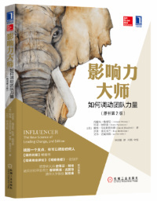
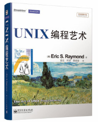
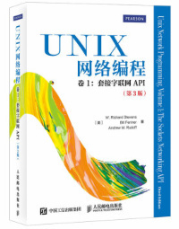
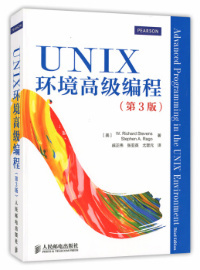
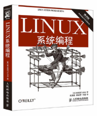
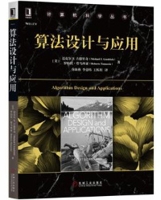
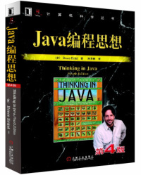
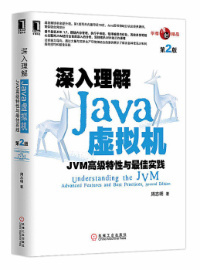
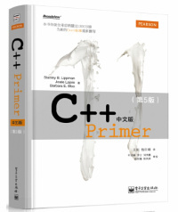

- 00 开篇词 照着做，你也能成为架构师！.md
- 01 架构到底是指什么？.md
- 02 架构设计的历史背景.md
- 03 架构设计的目的.md
- 04 复杂度来源：高性能.md
- 05 复杂度来源：高可用.md
- 06 复杂度来源：可扩展性.md
- 07 复杂度来源：低成本、安全、规模.md
- 08 架构设计三原则.md
- 09 架构设计原则案例.md
- 10 架构设计流程：识别复杂度.md
- 11 架构设计流程：设计备选方案.md
- 12 架构设计流程：评估和选择备选方案.md
- 13 架构设计流程：详细方案设计.md
- 14 高性能数据库集群：读写分离.md
- 15 高性能数据库集群：分库分表.md
- 16 高性能NoSQL.md
- 17 高性能缓存架构.md
- 18 单服务器高性能模式：PPC与TPC.md
- 19 单服务器高性能模式：Reactor与Proactor.md
- 20 高性能负载均衡：分类及架构.md
- 21 高性能负载均衡：算法.md
- 22 想成为架构师，你必须知道CAP理论.md
- 23 想成为架构师，你必须掌握的CAP细节.md
- 24 FMEA方法，排除架构可用性隐患的利器.md
- 25 高可用存储架构：双机架构.md
- 26 高可用存储架构：集群和分区.md
- 27 如何设计计算高可用架构？.md
- 28 业务高可用的保障：异地多活架构.md
- 29 异地多活设计4大技巧.md
- 30 异地多活设计4步走.md
- 31 如何应对接口级的故障？.md
- 32 可扩展架构的基本思想和模式.md
- 33 传统的可扩展架构模式：分层架构和SOA.md
- 34 深入理解微服务架构：银弹 or 焦油坑？.md
- 35 微服务架构最佳实践 - 方法篇.md
- 36 微服务架构最佳实践 - 基础设施篇.md
- 37 微内核架构详解.md
- 38 架构师应该如何判断技术演进的方向？.md
- 39 互联网技术演进的模式.md
- 40 互联网架构模板：存储层技术.md
- 41 互联网架构模板：开发层和服务层技术.md
- 42 互联网架构模板：网络层技术.md
- 43 互联网架构模板：用户层和业务层技术.md
- 44 互联网架构模板：平台技术.md
- 45 架构重构内功心法第一式：有的放矢.md
- 46 架构重构内功心法第二式：合纵连横.md
- 47 架构重构内功心法第三式：运筹帷幄.md
- 48 再谈开源项目：如何选择、使用以及二次开发？.md
- 49 谈谈App架构的演进.md
- 50 架构实战：架构设计文档模板.md
- 51 如何画出优秀的软件系统架构图？.md
- 加餐｜业务架构实战营开营了.md
- 加餐｜单服务器高性能模式性能对比.md
- 加餐｜扒一扒中台皇帝的外衣.md
- 如何高效地学习开源项目 华仔，放学别走！ 第3期.md
- 新书首发 《从零开始学架构》.md
- 架构专栏特别放送 华仔，放学别走！ 第2期.md
- 架构专栏特别放送 华仔，放学别走！第1期.md
- 架构师必读书单 华仔，放学别走！ 第5期.md
- 架构师成长之路 华仔，放学别走！ 第4期.md
- 结束语 坚持，成就你的技术梦想.md
架构师必读书单 华仔，放学别走！ 第5期
你好，我是华仔。
在专栏更新的时候，很多同学留言希望我推荐一些书籍可以课后继续学习，正好我自己也是一个爱读书的人，最近7 ~ 8年，平均每年读书超过50本，因此今天就从我读过的书籍中选择一些让我印象非常深刻的推荐给你。我把这些书分为成长、技术和业务三个方面，因为架构师本身就是一个比较综合的职位，对综合技能要求很高，需要你从各方面提升自己。
我推荐的书是我从几百本中挑出来的，可以说是经典中的经典了，但这并不意味着只要看完这些书就够了，读书和技术提升是类似的，都是一个长期积累的过程，积累越多、收获越大。关于技术人员具体如何学习、如何提升，可以参考我之前在InfoQ上发表的文章《佛系程序员的月薪五万指南》。
每本书我习惯用“一句话推荐”，虽然显得比较“简短”，但我认为推荐语太多会框住你对书的理解，也担心剧透太多会影响你的阅读体验。好书就像美酒一样，一定要自己品尝才能真正体会其中美妙的滋味。
成长篇
《异类》 一句话推荐：颠覆你对成功的认知，例如：什么才是赢在起跑线？为何现在的富人都是大约生于1955年左右？
《随机漫步的傻瓜》 一句话推荐：只要看这一本书，你就能免受所有鸡汤的毒害！
《一万小时天才理论》 一句话推荐：1万小时理论实践版，详细阐述了1万小时天才理论的3个关键点。
《情商》 一句话推荐：如果你认为你的老板还不如你聪明，那你需要好好看看这本书。
《优秀到不能被忽视》 一句话推荐：不管是工作还是爱好，要想成功的原则是什么？很简单，“做别人愿意买单的事情”！
《影响力大师》

一句话推荐：天天立flag，月月打自己的脸？不是你意志力不行，而是你方法不对，这本书可以给你一套完善、可操作的方法。（注：我以前读的版本叫《关键影响力》，新版改名叫《影响力大师》。）技术篇
推荐技术书籍实际上是有一定局限性的，因为每个技术领域其实差异还是挺大的，就算都叫程序员，前端程序员、客户端程序员、后端程序员之间差异就很大；即使都是后端程序员，Linux开发和Windows开发所需要的技术也不一样。因此我提炼了一个通用的技术书籍学习路径，不同技术领域可以按照这个路径去拆解：
- 深度学习你的代码运行环境：例如Linux程序员一定要深入学习Linux和UNIX的操作系统，iOS程序员要深入学习iOS系统，前端程序员要深入学习浏览器原理，以此类推。
- 深入学习你的核心工具：例如Java程序员的核心工具是Java，嵌入式程序员是C，而DBA就不是学编程语言，而是学MySQL或者Oracle了。
- 深度学习领域基础知识：例如后端程序员的网络编程，前端程序员的动效知识，Android客户端程序员的渲染知识，以及所有程序员都要求的算法知识等。
- 广泛学习技术领域的通用成熟技术：例如前端程序员要学的React和Vue，Java程序员要学的Netty、Spring，互联网后端程序员的标配MySQL、Redis等。
下面我以Linux后端Java程序员为例，给你推荐相关技术书籍。
《UNIX编程艺术》

一句话推荐：经典书籍，结合UNIX的历史来讲UNIX设计哲学，改变你对编程的认知和理解。《UNIX网络编程（卷1）》

一句话推荐：经典书籍，网络编程必读。书很厚，重点是前三部分，不需要一次全部读懂，先通读，后面经常参考并且加深理解。《UNIX环境高级编程》

一句话推荐：经典书籍，Linux/UNIX C/C++程序员必读，就算是Java、PHP、Python等程序员也要通读一遍，了解系统底层能力有助于理解编程语言的各种实现。《Linux系统编程》

一句话推荐：和《UNIX环境高级编程》类似，Linux平台可以看这本。《TCP/IP详解（卷1）》 一句话推荐：经典书籍，全面介绍TCP/IP协议栈各种协议，重点看TCP和IP部分。
《算法之美》 一句话推荐：讲算法非常有趣的一本书，告诉你如何将算法应用于恋爱、生活、工作！
《算法设计与应用》

一句话推荐：将算法与实际应用结合起来，从应用引出算法然后进行算法推理，如果你数学很牛，可以挑战一下这本书；如果你数学很菜，那我更加推荐这本书，因为其中的算法原理和应用场景分析得清晰易懂。《Java编程思想》

一句话推荐：经典书籍，全面介绍Java编程，入门必备。《深入理解Java虚拟机》

一句话推荐：全面理解Java虚拟机，原理介绍得深入浅出，很少有技术书籍我会优先推荐国内作者，而这本是我大力推荐的。《C++ Primer》

一句话推荐：经典书籍，全面介绍C++编程。当年我看了很多C++书籍都不得要领，看了这本后豁然开朗。业务篇
不管是普通程序员还是架构师，实践工作中都需要有一定的业务理解能力，而架构师的业务理解能力要求更高。理解业务一方面有利于更好地设计有针对性的架构或者方案，另外一方面也可以防止被产品经理坑 ：）
《增长黑客》
一句话推荐：肖恩·埃利斯和摩根·布朗的这本书理论体系完整，既给出了很多实践技巧，又总结了很多经验和需要避开的陷阱。
《需求》
一句话推荐：如何理解用户需求、如何满足用户需求、同样产品为何有的公司失败而有的公司取得了巨大成功？这本书让我茅塞顿开，建议技术同学都推荐这本书给你们的产品经理。
《淘宝十年产品事》 一句话推荐：这本书总结了淘宝10多年发展过程中产品遇到的各种坑和挑战，让你明白“罗马不是一天建成的”，产品也是逐步演化的（这也是我的“架构设计三原则”中的“演化原则”）。
《定位》 一句话推荐：告诉你如何做业务战略规划，有些偏重理论，架构师需要学习，程序员可以先放一边。
《宝洁制胜战略》 一句话推荐：结合宝洁的经验，提出了一套完善的战略规划和落地方法，理论与实践兼备，架构师必备，拿着这套方法论，就可以PK你的老板了。
最后我想说，收藏书单和囤书不是目的，更不能收获成长，只有像学习专栏那样坚持下来，坚持阅读、坚持记录、坚持分享，才能让你从书中品尝到最妙的美酒。
编辑乱入：华仔推荐的图书现已上架“极客商城”，价格比其他电商平台更美丽哦～现在订购，请从“极客时间发现页”下滑进入“极客商城”，即可选购华仔推荐图书。
© 2019 - 2023 Liangliang Lee. Powered by gin and hexo-theme-book.